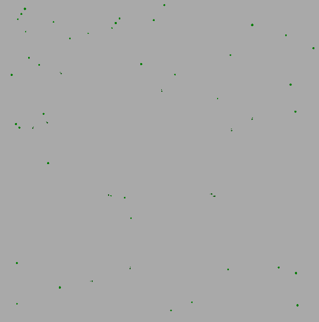

Hey there! 👋
I'm Daniel, a Software Developer and Computer Science student at Chalmers University of Technology in Gothenburg, Sweden.
You can check out some of my projects by clicking on them to the left!
If you want to get in touch with me, send an email to daniel@dcronqvist.se.
Perhaps you want to get to know me more? Check me out on some other platforms!
danpass
github repodanpass is a very simple command line interfaced password manager written in python using fernet encryption to store passwords securely.
how to use
to add new entries to the manager, you simply run:
$ danpass add -s example.com -u username -p password
once you've added a bunch of entries to danpass, you can search through the entries in two different ways, either by site:
$ danpass find -s example.com
or you can search by the entry's numeric id:
$ danpass find -id 415
Found 1 entries in danpass.
-----------------------------------
ID: 415
Website: example.com
Username: username
Password: password
-----------------------------------
there are of course ways to update or delete existing entries, check out the github repo if you're curious!
evolvi
github repoThis was my final project in high school. The neural networks and the genetic algorithm were implemented by me, in C#.
In the .gif to the left you can see a couple of black dots moving about. Those are the small virtual creatures, and they're constantly looking for green dots, which is food.
If the creatures run out of food, or rather, don't eat enough, they die and can't reproduce. Natural selection in evolution kicks in and makes sure that only the creatures that have neural networks which actively look for food survives.
That explains the project in layman's terms, but if you're curious about the intricacies of developing a project like this, check out the github repo!
restberry-api
github repoThis REST API, written in Python, is hosted on my RPi 4, and I mostly use it for personal finance management. The finance data comes from my Google Sheet with registered expenses and incomes. The following examples are simplified API responses.
One endpoint I use a lot is the current month's statistics:
$ curl https://api.dcronqvist.se/econ/outcomes/month
{
"response": {
"balance": "3841.76",
"budget": "10912.81",
"result": "7071.05",
}
}There are also a couple of endpoints for checking what food is available at different restaurants on Chalmers campus:
$ curl https://api.dcronqvist.se/food/jh/express/week/eng
{
"response": {
"monday": "Mushroom & bean risotto, spinach",
"tuesday": "Vegetarian lasagna, len...",
"wednesday": "Chinese casserole, roots, bl..."
...
}
}upcoming projects...
github profileI'm constantly working on fun projects! Follow me on github to see what I'm doing on the daily :)